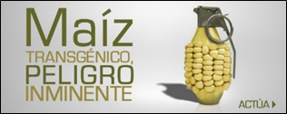
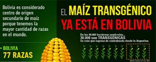

Es el tiempo donde Germinan ECOconsumidores haciendo brotar el accionar colectivo en defensa de las
semillas. Es hora de preservar nuestra vida, de las generaciones futuras y de nuestra madre tierra. Debemos
usar nuestro poder de compra para promover un sistema productivo basado en la ética, donde prime nuestra
herencia agroandina y nuestras tradiciones alimentarias, aspectos centrales que configuraron nuestra
cosmovisión e identidad multicultural.
Bolivia es Centro de Origen y Diversidad de muchos alimentos y uno de los países más ricos en Biodiversidad
del planeta. Los andes centrales y la cuenca del sur del Amazonas son los dos principales territorios de
evolución de las variedades del maíz en Sudamérica y Bolivia se halla justo en la parte central o núcleo de
ambas zonas . Los maíces bolivianos fueron clasificados en 7 complejos raciales, 45 razas y centenares de
variedades, cuya diversidad y riqueza está distribuida por todo el territorio nacional. Los maíces andinos
cultivados hasta los 3800 m.s.n.m. tienen alto grado de especialización adaptativa y son bastantes
diferentes de las especies mexicanas.
De acuerdo a Carlos Lemus en las culturas prehispánicas andinas “el cultivo del maíz tuvo no sólo una
importancia dietética o ritual, sino también social por la forma de su siembra y cosecha, circulación y
empleo en las esferas de tráfico e intercambio de la región de la Cuenca del Lago Titicaca, valles
orientales y occidentales y probablemente también zonas bajas”. Diferentes investigaciones sobre el control
vertical de pisos ecológicos y el modelo de complementariedad de la economía andina “identifican al maíz y a
la sal como elementos primarios dentro del sistema de intercambio existente entre valles y altiplano”.
Los científicos reconocen que el maíz podría ser la única planta que no pudo ser producto de la selección
natural, pues está demostrado que fue con la intervención humana y el mejoramiento milenario de nuestros
antepasados, que se logró obtener el grano que ahora se cultiva. Podemos decir que el maíz es uno de los
primeros productos de la verdadera biotecnología.
La cultura de la autonomía alimentaria, del ordenamiento territorial, de la preservación de los recursos
naturales y de la agroecología, crearon una gran diversidad genética de maíz. Para la humanidad, el mundo
sería diferente si no existiera este alimento. De ahí que el vocablo Maíz significa “sustento de la vida”
El maíz aporta a la salud alimentaria de la población por ser un cereal muy nutritivo y apreciado por sus
propiedades culturales, históricas y culinarias traducidas en una gran cantidad de exquisitos platos
nacionales como la Lawa de Choclo, Humintas, Api morado, Locro, Patasca, Chuspillo, Pan de Harina de Maíz,
los Maicillos, las Arepas cruceñas, Tortillas de maíz, el Choclo con queso, el Plato paceño, el Chicharrón o
el Fricase. Mejor si están acompañados de Chicha o de la refrescante chicha morada o el Somó.

Hace más de 5 mil años, que Bolivia es vital en la producción y evolución del cultivo de maíz, así como de
su cultura alimentaria y civilizatoria, somos los hijos e hijas del maíz y debemos defenderlo. El maíz es
para nosotros además de alimento: raíz de nuestra bolivianidad y sustento de nuestra cultura.
Sin embargo, esta riqueza no es aprovechada en función de la salud de la población ni del desarrollo
sostenible nacional. Son más de 15 años de producción transgénica y todo se maneja de manera solapada,
ilegal y por fuera de las necesidades del pueblo/personas/colectividad. Desde el año 2000, en las
principales ciudades del país, profesionales, activistas, jóvenes estudiantes, amas de casa, trabajadores o
personas de a pie, nos hemos manifestado masivamente a favor de la biodiversidad alimentaria de Bolivia y
contra la introducción de productos transgénicos porque atentan contra la salud, el medioambiente y la
identidad cultural de los pueblos indígenas y campesinos del país.
Somos herederos de 12 mil años de agricultura sostenible en armonía con la Pacha, somo el pueblo del
Kollasuyu, de la gente que cría con sabiduría las plantas y los alimentos diversos en las chacras
milenarias.
Nosotras hemos acumulado miles de estudios que refutan las “bondades e inocuidad” de 20 años de transgénicos
y hemos pedido al Estado nos dé respuestas claras y respaldadas sobre sus efectos en la salud alimentaria,
la biodiversidad y el ambiente.
La respuesta gubernamental es un manejo solapado, despreocupado, falto de actualidad y cómplice sobre esta
“forma de ciencia” que obedece a los intereses privados y empresariales. No hay instancia gubernamental que
responda en función de sus deberes y en el marco de la ley, tanto a la MADRE TIERRA, como a nosotras las
ECOconsumidoras.
En este contexto defendemos nuestras 77 variedades de Maíz boliviano de la contaminación transgénica. El
ingreso vía contrabando de Material Genéticamente Modificado, su producción y comercialización ilegal, junto
al uso descontrolado de Agroquímicos ponen en peligro la Soberanía alimentaria y la Salud alimentaria de la
Población Boliviana.
Por la dejadez gubernamental, estamos contaminado de forma vertiginosa nuestros maíces, y asi estamos
tambien perdiendo la bolivianidad y la dignidad como país para defender y conservar lo nuestro.
Por ello estamos movilizadas y vigilantes del accionar de las reparticiones del sector agroindustrial que
desde hace varios años atrás van favoreciendo abiertamente al agronegocio –sobre todo de la soya
TRANSGENICA-. Acaso no se dan cuenta que el uso de estos “paquetes tecnológicos” significa una paulatina
desaparición de nuestros cultivos ancestrales, la expulsión permanente de campesinos e indígenas de sus
comunidades, una deforestación alarmante y por ende un atentado a la salud nacional, debido al uso de
agrotóxicos prohibidos en muchos países del planeta.
Después de la soya transgénica -que desde el año 2005 va ocupando casi la mitad de los territorios
cultivables del país- hoy por hoy pretenden ilegalmente hacer lo mismo con el MAIZ, uno de los cultivos más
importantes para la alimentación en el mundo.
¡MAIZ TRANSGENICO está pidiendo a gritos el agronegocio: la Asociación de Productores de Oleaginosas y
Trigo, ANAPO, la Cámara Agropecuaria de Oriente, CAO, el Instituto Boliviano de Comercio Exterior (IBCE), la
Asociación de Proveedores de Insumos Agrícolas (APIA), la Asociación Nacional de Proveedores de Insumos,
Bienes y Servicios Agrícolas y Pecuarios (APRISA) y otras empresas, en concordancia con las transnacionales
como Monsanto-Bayer. Llama la atención que los pequeños productores agrupados en la CAPPO (Cámara
Agropecuaria de Pequeños Productores del Oriente) que agrupa a productores Colonizadores, CSUTCB y
Bartolinas sean ahora los abanderados de pedir más transgénicos en Bolivia (soya, maíz, algodón y caña de
azúcar).
Por priorizar la producción transgénica, Bolivia está importando más de 150 alimentos que antes producía,
gastando el año 2016 cerca de 700 millones de dólares, con efectos negativos sobre los productores primarios
y los procesadores.
Frente a esta situación por demás preocupante, se requiere una población movilizada y consciente que
defienda sus derechos como consumidor, y se solidarice con los derechos del agricultor a guardar su propia
semilla y producir de manera responsable para su comunidad y para quienes consumen sus alimentos. Por esa
razón les convocamos a fortalecer el movimiento en Defensa del Maíz y por una comunidad, un municipio y una
Bolivia Libre de Transgénicos.
Con la Campaña Nacional “El MAIZ es mi RAIZ” queremos multiplicar las voces de miles y miles de pequeños
productores y de consumidores para denunciar esta situación a nivel nacional e internacional, para exigir
respuesta del por qué no se están realizando los controles pertinentes tanto para prohibir el ingreso,
introducción, producción, uso, liberación al medio y comercialización de semillas genéticamente modificadas,
así como el uso indiscriminado de agrotóxicos.
¡Hacemos un llamado a la sociedad entera solicitando que no dejen de participar en esta campaña por
salvaguardar el maíz boliviano y que presten especial atención y actúen cuanto antes!!!

Acciones de Campaña que tú puedes realizar:
Defender las 77 variedades de maíz nativo
Difundir los estudios sobre los riesgos del maíz transgénico
- Demostraciones sobre la importancia del maíz para Bolivia (ferias, festivales, actos, obras de
teatro,
dar difusión a las actividades que se realicen a nivel local y regional ciberdenunciar y ciberproponer)
- Día contra MONSANTO, en mayo nos unimos a nivel global para que seamos Millones de Semillas que jamás
Modificaran por que le decimos No al agroNEGOCIO que quiere patentar la vida. Fuera Monsanto de mi
cuerpo/territorio
SOLICITEMOS a las autoridades:
- Respetar la Constitución, Normas, Leyes y Decretos relacionados a la biodiversidad.
- Abrogar las leyes y decretos incendiarios y transgenicos
- Defender los recursos genéticos como patrimonio de todos los bolivianos/as.
- Procesar a las autoridades irresponsables de la violación de las normativas actualmente vigentes.
- Detener la importación ilegal y el contrabando de semillas de maíz transgénico.
- Impulsar cambios transformadores en nuestros sistemas alimentarios, agrícolas y comerciales con el
fin
de resguardar la biodiversidad, prohibiendo los cultivos genéticamente modificados, disminuyendo
paulatinamente los agrotóxicos y apoyando a los productores agroecológicos.
- ¡Las ECOconsumidoras debemos ser tomadas en cuenta a la hora de definir la política agroalimentaria
del
país!!!